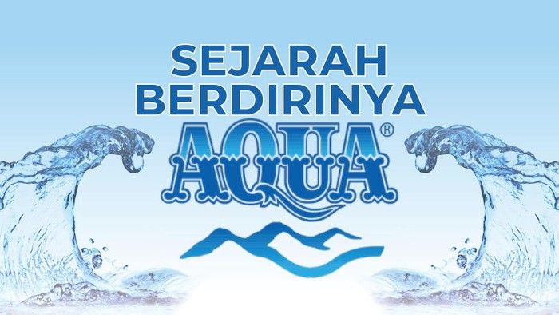
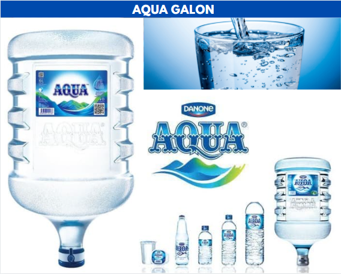
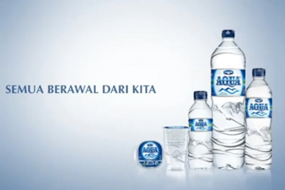

PROFIL

AQUA (atau disebut juga Danone-AQUA) adalah merek air minum dalam kemasan yang diproduksi oleh AQUA
Group sejak tahun 1973. Selain di Indonesia, AQUA juga melayani penjualan produk di Malaysia, Singapura dan
Brunei[butuh rujukan][1]. Sebagai pelopor air minum dalam kemasan di Indonesia, AQUA telah menjadi merek generik
di kalangan produk air minum dalam kemasan.[2]Produk AQUA berasal
dari sumber air pegunungan di Indonesia yang diklaim pemilihannya melalui penelitian lebih dari 1 tahun. AQUA juga berfokus
pada upaya memelihara keberlanjutan sumber air dengan melindungi ekosistem dan menjaga kemurnian kandungan mineralnya.
SEJARAH

Latar Belakang
Pendirian awal AQUA dimulai saat Tirto Utomo keluar dari pekerjaannya yang sebagai pegawai Pertamina.
Dahulu, saat bekerja di perusahaan migas tersebut, air yang disajikan pada tamunya merupakan
air kran, sehingga pernah membuat mereka terkena diare. Hal ini membuat Tirto sadar pentingnya
membuat air minum yang higienis.[4] Tirto mulai mempelajari cara memproses air menjadi air minum
siap konsumsi. Tirto meminta sang adik, yaitu Slamet Utomo untuk bekerja secara magang pada pabrik
Air Mineral Dalam Kemasan "Polaris" di Thailand, yang saat itu telah berproduksi selama lebih
dari 15 tahun lamanya.
Slogan

•Bersih, bening, bebas bakteri (1986-1991)
•Air sehat setiap saat (1991-1999)
•Sehatnya Nyata (1999-2004)
•Dari Sumber Terlindung, Melindungi Anda Sekeluarga (2002-2004)
•Begitu Hidup Dengan AQUA (2005-2007)
•Kemurnian Untuk Masa Depan (2007-2009)
•Kebaikan Alam, Kebaikan Hidup (2009-2013, 2017-2020)
•Kebaikan Hidup (2013-2017)
•Terlindungi Untuk Melindungimu (2020-2022)
•Murni & Terlindungi (2022-sekarang)